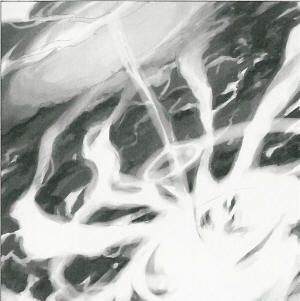
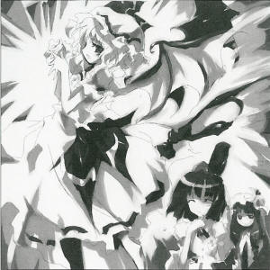

| The 118th Season, Nagatsuki 5
The Crimson Rainbow and Angel's Wings
That Straddle The Earth
The scarlet mist incident seen from super-high altitude. It has already been half a month since Gensokyo was covered in a scarlet mist. This incident that hasn't even been completely resolved yet, seeing it, one could say it's a large event that only happens every couple years. I think we should cut into this incident from a different perspective, for once. As you may have heard, on one holiday, Gensokyo became covered in an unusually thick mist that some say even blocked out light. That is the situation up until now. Since this mist had a slight scarlet tint, it generally became known as the scarlet mist incident. Because of this extremely thick mist, anyone close to it wouldn't be able to see anything. So, the tengu tribe revived their unique abilities and observed the incident from super-high altitude. I was able to obtain a photograph from this. From this, it was established that the scarlet mist was more irregular and the light and shade variation was more intense than expected. The parts with the deepest scarlet concentration completely blocked out light. It was impossible to see the ground there. However, for some reason, the light and shade variation of this mist formed a pattern. The pattern traced several lines wrapping across Gensokyo so it looked almost like tengu wings. It looks like the lines originated from somewhere around the mountain lake, but it is hard to tell because the ground is covered. Furthermore, aside from these wings, I noticed a bright light coming from the surface of the earth occasionally. Seeing this from the air, the light formed a scarlet rainbow when it was emitted. I was unable to tell what the light was, but around here people just call things a mysterious phenomenon if they can't observe them normally. The strange pattern that would have never been seen from the ground and the circular rainbow, I don't know the intention of the person that created them, but there must be some clue left behind by the person responsible. The sunless summer continues. There are surely feelings of tedium towards this chilling mist surrounding Gensokyo, but youkai that fly in the air are encouraged to enjoy the spectacle above the mist.\
(Aya Shameimaru)
|
|
Remilia  Why are you showing me this old newspaper? Aya I wanted to know if there was any meaning behind it. Remilia The pattern in the mist? The red rainbow? I don't know anything about that. And I'm surprised you know it was I who released the mist. Aya It would be strange for me not to know. Immediately after the scarlet mist incident, Marisa started visiting your mansion regularly, and you started visiting the shrine regularly. Remilia It's true that I was the one that released the mist, but I don't know of any pattern. Aya ...So you're saying there's no meaning behind it? Even though it was so clear? Remilia Didn't I just say that? I don't know anything about what caused it either. It's probably from an unknown natural phenomenon. Aya Well, what do you think about the light and rainbow in this photograph? Remilia Hmm, let me see. Isn't that just the light from when humans go wild? That's what it looks like from above. Aya Those humans always go wild when this sort of event occurs. Remilia It's extremely annoying. Aya Odd that you should be the one to say that. Anyway, let's get back to the subject of the mist. Remilia Since the form of the mist is something with high density and fine particles... It would probably bend light into a something like a rainbow. Just like real mist. Aya If that's so, why would the rainbow be scarlet? Remilia My mist is like jewels that are finer than fine water droplets. That's what gives it such a hazy hue of red. Aya Oh. Patchouli Remi's mist is almost like jewels that are denser than regular water droplets, so it bends light stronger than water droplets. That's why Remi's mist is called "bewitching mist". As the wavelength of the refracted light drops past scarlet, it becomes completely diffused and most of the light is absorbed by the mist. That's why only the straightest scarlet remains and the rainbow appears to be scarlet colored. Remilia That's right. It's just like I said-- That's unusual. Is it tea time already? Patchouli Sakuya said that we're having an unusual visitor, so I came to watch. Aya Thank you for having me. I'm just here to collect some data as I thought it might make good material for an article. Remilia I see. Apparently, my mist looks like a pair of angel's wings when seen from the skies. Do you see anything, Patche? Patchouli Let me see that newspaper... Aya Here you are. Remilia An angel, they say. Not that I particularly mind being called that. Aya What a strange devil you are. Patchouli I don't see anything wrong with this. Aya What? Do you get it? I'm impressed! Patchouli Remi's fingers. Remilia Oh, I get it now. I'm sure that was the shape of my hands when I released the mist. Something like this? Patchouli Just like that. Aya So you release the mist from your fingertips...
Remilia Scarlet Mistress of the Scarlet Devil Mansion. She's a vampire that has lived for about 500 years and has the ability to manipulate fate. She covered Gensokyo with mist in order to block out the sunlight. Appearances: Embodiment of Scarlet Devil, Perfect Cherry Blossom (Ending only), Immaterial and Missing Power, Imperishable Night |
| [PREVIOUS ARTICLE : Rumia] | [INDEX] | [NEXT ARTICLE : The Three Fairies] |